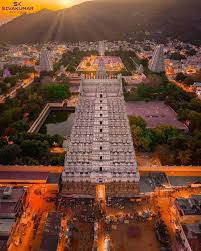
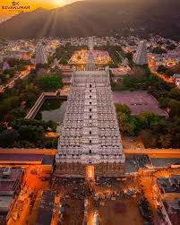
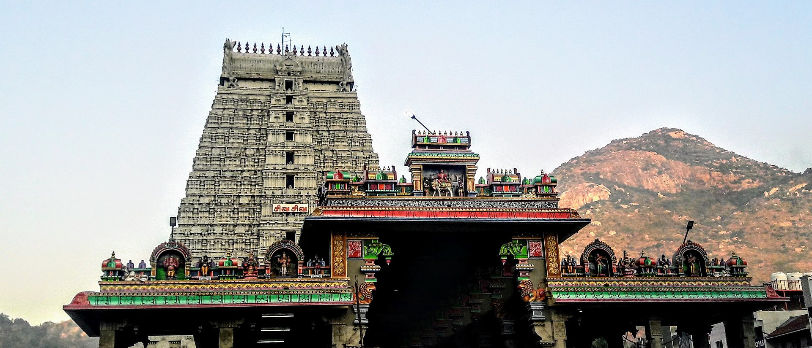
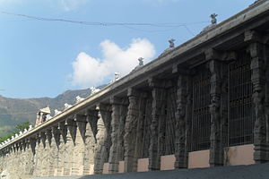

Arunachalesvara Temple (also called Annamalaiyar Temple) is a Hindu temple dedicated to the deity Shiva, located at the base of Arunachala hill in the town of Tiruvannamalai in Tamil Nadu, India. It is significant to the Hindu sect of Shaivism as one of the temples associated with the five elements, the Pancha Bhuta Sthalams, and specifically the element of fire, or Agni. Shiva is worshipped as Arunachalesvara or Annamalaiyar, and is represented by the lingam, with his idol referred to as Agni lingam. His consort Parvati is depicted as Unnamalai Amman or Apithakucha Ambal.[2][3] The presiding deity is revered in the 7th-century Tamil Saiva canonical work, the Tevaram, written by Tamil saint poets known as the nayanars and classified as Paadal Petra Sthalam. The 9th-century Shaiva saint poet Manikkavasagar composed the Tiruvempavai here. The temple complex covers 10 hectares, and is one of the largest in India.[4] It houses four gateway towers known as gopurams. The tallest is the eastern tower, with 11 stories and a height of 66 metres (217 ft), making it one of the tallest temple towers in India built by Sevappa Nayakkar (Nayakar dynasty)[4] The temple has numerous shrines, with those of Arunachalesvara and Unnamalai Amman being the most prominent. The temple complex houses many halls; the most notable is the thousand-pillared hall built during the Vijayanagara period. The present masonry structure was built during the Chola dynasty in the 9th century, while later expansions are attributed to Vijayanagara rulers of the Sangama Dynasty (1336–1485 CE), the Saluva Dynasty and the Tuluva Dynasty (1491–1570 CE). The temple is maintained and administered by the Hindu Religious and Charitable Endowments Department of the Government of Tamil Nadu. The temple has six daily rituals at various times from 5:30 a.m. to 10 p.m., and twelve yearly festivals on its calendar. The Karthikai Deepam festival is celebrated during the day of the full moon between November and December, and a huge beacon is lit atop the hill. It can be seen from miles around, and symbolizes the Shiva lingam of fire joining the sky.[5] The event is witnessed by three million pilgrims. On the day preceding each full moon, pilgrims circumnavigate the temple base and the Arunachala hills in a worship called Girivalam, a practice carried out by one million pilgrims yearly.[4][5][6] The western world learnt of Tiruvannamalai during the mid 20th century, through the work of Ramana Maharishi (1879–1950 CE)
Ancient Tamil scholars such as Nakkirar (1st century BCE to 1st century CE), Kapilar and Paranar (125 to 225 CE) have referred to the shrine at Annamalai and the presiding deity.[14] The 7th-century Nayanar saints Sambandar and Appar wrote of the temple in their poetic work, Tevaram. Sekkizhar, the author of the Periyapuranam wrote that both Appar and Sambandar worshiped Arunachalesvara in the temple.[15] The Chola Kings ruled over the region for more than four centuries, from 850 CE to 1280 CE, and were temple patrons. The inscriptions from the Chola king record various gifts like land, sheep, cow and oil to the temple commemorating various victories of the dynasty.[16] The Hoysala kings used Tiruvannamalai as their capital beginning in 1328 CE.[13][17] There are 48 inscriptions from the Sangama Dynasty (1336–1485 CE), 2 inscriptions from Saluva Dynasty, and 55 inscriptions from Tuluva Dynasty (1491–1570 CE) of the Vijayanagara Empire, reflecting gifts to the temple from their rulers.[18] There are also inscriptions from the rule of Krishnadeva Raya (1509–1529 CE), the most powerful Vijayanagara king, indicating further patronage.[19] Most of the Vijayanagara inscriptions were written in Tamil, with some in Kannada and Sanskrit.[20] The inscriptions in temple from the Vijayanagara kings indicate emphasis on administrative matters and local concerns, which contrasts the inscriptions of the same rulers in other temples like Tirupathi. The majority of the gift related inscriptions are for land endowments, followed by goods, cash endowments, cows and oil for lighting lamps.[19] The town of Tiruvannamalai was at a strategic crossroads during the Vijayanagara Empire, connecting sacred centers of pilgrimage and military routes.[21] There are inscriptions that show the area as an urban center before the precolonial period, with the city developing around the temple.[21][22] During the 17th century CE, the temple along with the Tiruvannamalai town came under the dominion of the Nawab of the Carnatic. As the Mughal empire came to an end, the Nawab lost control of the town, with confusion and chaos ensuing after 1753.[9] Subsequently, there were periods of both Hindu and Muslim stewardship of the temple, with Muraru Raya, Krishna Raya, Mrithis Ali Khan, and Burkat Ullakhan besieging the temple in succession. As European incursions progressed, Tiruvannamalai was attacked by French Soupries, Sambrinet, and the English Captain Stephen Smith. While some were repelled, others were victorious. The French occupied the town in 1757, and the temple along with the town came under control of the British in 1760.[16] In 1790 CE, Tiruvannamalai town was captured by Tippu Sultan, who ruled from 1782 to 1799 CE.[9] During the first half of the 19th century, the town along with the temple came under British rule.[16] From 1951, under the provision of the Hindu Religious and Charitable Endowments Act, the temple has been maintained by the Hindu Religious and Charitable Endowments Department (HR & CE) of the Government of Tamil Nadu.[15] In 2002, the Archaeological Survey of India declared the temple a national heritage monument and took over its stewardship. Widespread protests and litigation with the Supreme Court of India, however, led the Archaeological Survey to cede the temple back to the Hindu Religious and Endowment Board
Shrines The main shrine of Arunachalesvara faces east, housing images of Nandi and Surya, and is the oldest structure in the temple.[28] Behind the walls of the sanctum, there is an image of Venugopalaswamy (Krishna), an incarnation of Vishnu. Around the sanctum, there are images of Somaskanda, Durga, Chandeshvara, Gajalakshmi, Arumugaswami (Kartikeya), Dakshinamurthy, Swarnabairavar, Nataraja, and Lingodbhava—the last an image of Shiva emanating from lingam. The Palliyarai, the divine room for resting deities, is located at the first precinct around the sanctum. The shrine of his consort, Annamalai Amman, lies in the second precinct, with Amman depicted in a standing posture. Sambantha Vinayagar (Ganesha), is located to the north of the flagstaff and the Bali peeta, or platform for sacrifice.[29] To the south of the thousand-pillared hall, there is a small shrine for Subramanya (Kartikeya) and a large tank.[5] Pathala Lingam, the underground lingam, is the place where Ramana Maharshi (1879–1950 CE) is believed to have performed his penance.[30][31] The shrine of Sivagangai Vinayagar (Ganesha) is present in the northern bank of the Sivanganga tank.[
 Visit more temples in arunachalam
Tamilnadu, India has centuries of history and many sites of tourist interest.[1] Some of them are: